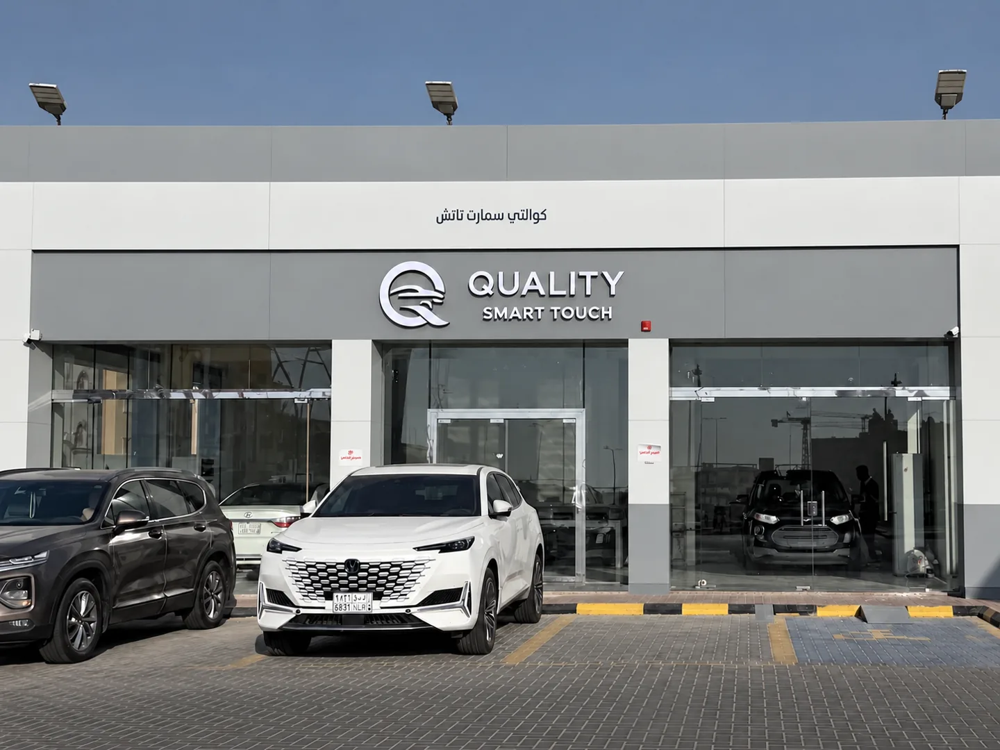

01
تخصصناتعديل الصدمات
بدون سمكرة وصبغ
تعديل بدون سمكرة وصبغ بتقنية PDR، وشفط الصدمات والتصليح بالبارد للحالات المناسبة، بعد التشييك على السيارة.
شفط الصدماتتصليح بالبارد
أرسل صورة الصدمة بدون صبغ أو سمكرة.
تعديل الصدمات بتقنية PDR للحفاظ على طلاء سيارتك الأصلي، مع خدمة تلميع داخلي وخدمة تلميع خارجي.
4.9/5
كل سيارة لها تفاصيلها. نبدأ بفهم حالتها، ثم نحدد الخدمة المناسبة لها.
تعديل بدون سمكرة وصبغ بتقنية PDR، وشفط الصدمات والتصليح بالبارد للحالات المناسبة، بعد التشييك على السيارة.
عناية بمظهر الأجزاء الداخلية للسيارة، مع توضيح تفاصيل الخدمة المناسبة لحالتها.
تلميع الأسطح الخارجية لتحسين مظهر السيارة ولمعانها، حسب حالة الطلاء.
نشيّك على موضع الضرر وحالة الطلاء ونوضح لك الحل المناسب قبل بدء العمل.
تقنية PDR تعيد تشكيل الصاج في الحالات المناسبة دون الحاجة إلى إعادة الطلاء. نقيّم كل حالة لنحدد ما يمكن تحقيقه بوضوح.
هل PDR مناسب لسيارتك؟صوّر الضرر من أكثر من زاوية، وأرسل نوع سيارتك وموديلها عبر واتساب.
نقيّم الصدمة والطلاء، ونوضح الخدمة والتكلفة والمدة قبل التنفيذ.
نعالج التفاصيل ونراجع النتيجة معك عند استلام السيارة.
صور فعلية من أعمال كوالتي سمارت تاتش. تفاصيل المعالجة كما تظهر في صور المركز.
يعتمد ذلك على عمق الصدمة وموقعها وحالة الطلاء وإمكانية الوصول إليها. التشييك يحدد مدى ملاءمة التقنية، خاصة إذا كان الطلاء متشققًا أو سبق إصلاح الجزء.
تختلف التكلفة والمدة بحسب حجم الضرر وعدد المواضع وصعوبة المعالجة. أرسل صورًا واضحة للتقييم الأولي، وتُحدد التفاصيل بعد التشييك على السيارة.
يفضل التواصل معنا عبر واتساب لتنسيق الوقت المناسب. أرسل نوع السيارة والخدمة المطلوبة والوقت الذي يناسبك، وسنؤكد الموعد معك.
نعم، يمكنك اختيار التلميع الداخلي أو التلميع الخارجي بشكل مستقل من نموذج الحجز والاستفسار، ونوضح لك تفاصيل الخدمة والتكلفة حسب حالة السيارة.
اختر نوع التواصل وعبّئ بيانات سيارتك، ونجهّز لك الرسالة على واتساب.
بعد تعبئة النموذج وفتح واتساب، أرفق صور الصدمة من أكثر من زاوية ووضّح مكانها.
إرفاق الصور يكون داخل واتساب بعد فتح المحادثة.أرسل صورة سيارتك، وخلّنا نوضح لك الأنسب.
استفسر الآن